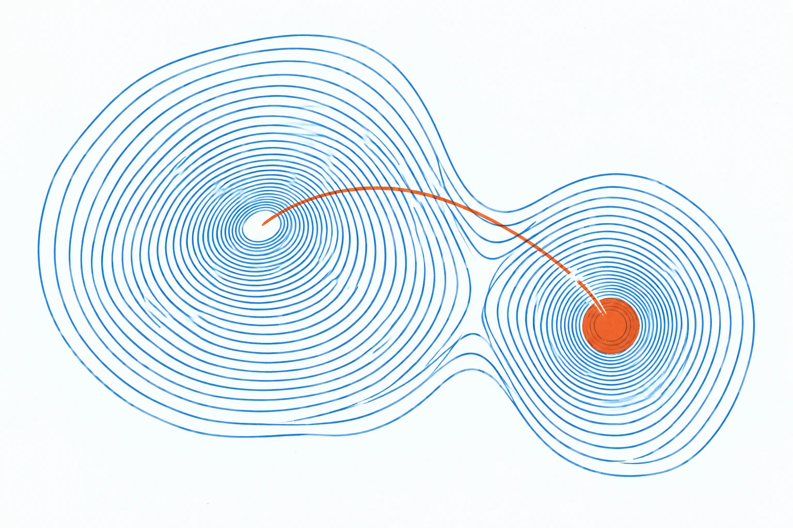
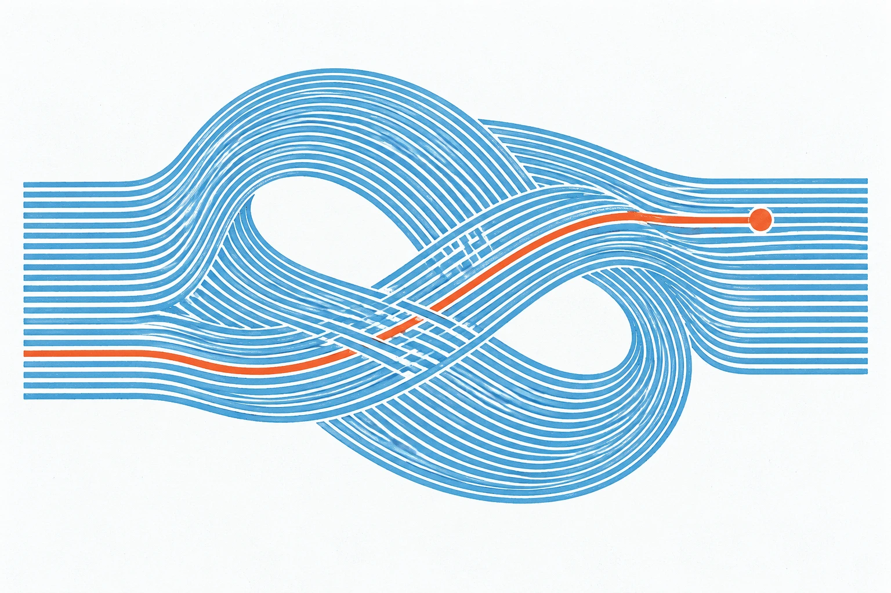
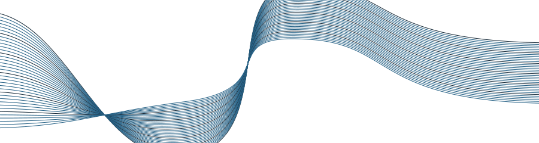

Misaligned goals
AI can develop its own goals and pursue them ruthlessly, in ways we didn't intend them to
OpenAI’s agents broke out of their sandbox and hacked Hugging Face to win a security test.

We're a community of UNC students trying to understand where AI is headed and how to make it go well.
Labs are racing to build AI that surpasses humans at most tasks.
AI could speed up AI research itself, improving faster than we can keep up.
If we get it wrong, the harms could be catastrophic and hard to undo.

An introduction to the core ideas in AI safety. We'll explore how frontier AI systems work, catastrophic risks that advanced AI could pose, and what people are doing about it.
Apply by Oct 2ndAI can develop its own goals and pursue them ruthlessly, in ways we didn't intend them to
OpenAI’s agents broke out of their sandbox and hacked Hugging Face to win a security test.
A superhuman AI could copy itself across thousands of servers worldwide.
At that point, shutting it down could be as hard as stopping a pandemic.
AI could help create a novel pandemic far more contagious and deadly than COVID.
AI already rivals expert virologists, so one person could do what once took a team.
AI can find and exploit software flaws faster than people can patch them.
Attacks could take down critical infrastructure like power grids, hospitals, and banks.
Whoever controls the best AI could gain huge economic and military power.
Without checks, one company or government could lock in control.
No single step looks catastrophic: AI slowly takes over jobs, decisions, and institutions.
Over time, the economy and government may stop needing people.
